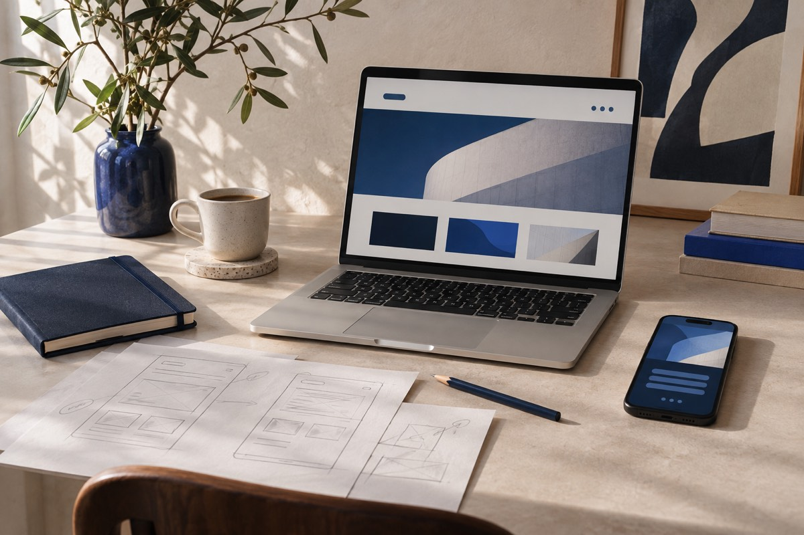
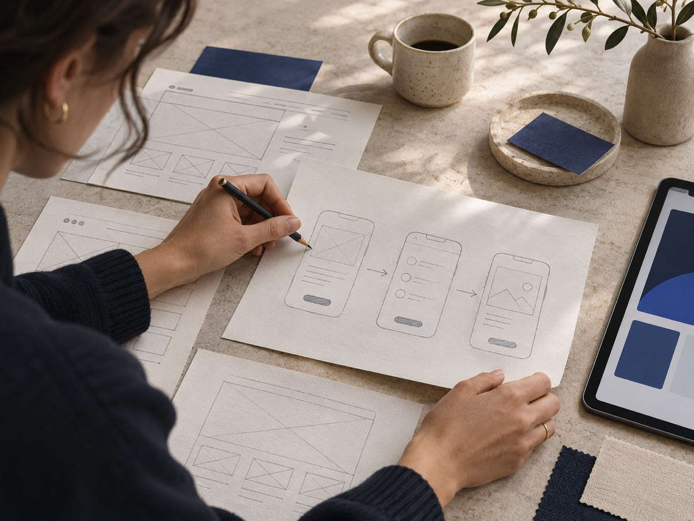

Сайты
Сайт-визитка, лендинг, интернет-магазин или большой многостраничный проект.
Разрабатываем цифровые продукты с нуля под ключ: от первого разговора до запуска.
Посмотреть услуги
Подбираем решение под вашу задачу, а не под готовый шаблон.
Сайт-визитка, лендинг, интернет-магазин или большой многостраничный проект.
Личные кабинеты, сервисы и инструменты, которые помогают людям работать проще.
Продуманные экраны и функции для продукта, которым удобно пользоваться каждый день.
Боты для заявок, поддержки и автоматизации повседневных задач прямо в Telegram.
Каталоги, сервисы и личные кабинеты внутри мессенджера, без отдельной установки.

Мы слушаем, задаём вопросы и продумываем путь пользователя. Так у проекта появляется своя структура, удобный интерфейс и основа для развития.
Вы всегда понимаете, что происходит с проектом.
Обсуждаем вашу идею, аудиторию и цели.
Собираем структуру и продумываем интерфейс.
Создаём продукт и проверяем важные сценарии.
Публикуем проект и помогаем с дальнейшими шагами.
Оставьте короткое описание проекта. Форма начнёт принимать заявки после подключения Telegram-бота.